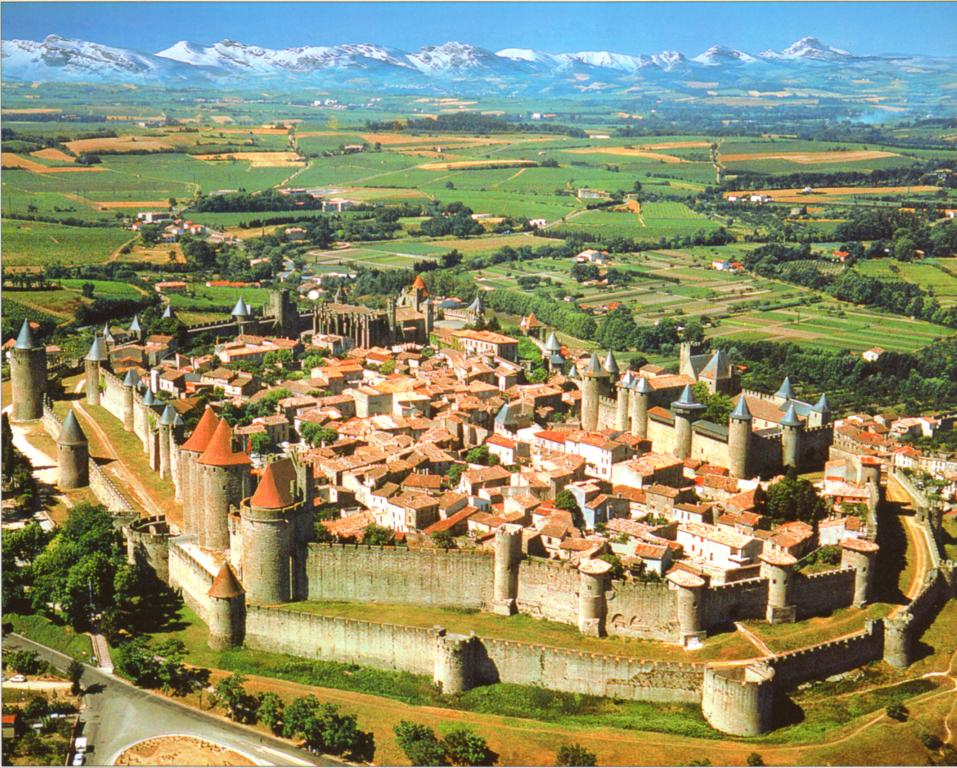

Город Дрейнстиг, один из крупнейших городов на юге.
Поместье Прейта в 2 километрах от города.

Проходили недели, месяца. Вы выслеживали и следили за жертвой и её повадками.
— Итак, план таков: Вы ждете с каретой в 300 метрах от поместья к югу. Как только я сделаю своё дело, мы отступаем. Ясно?
— Ясно.
"Эх, старые добрые задания на обычное выслеживание и убийство." Отправиться на выполнение задания в поместье Прейта
Отправиться на выполнение задания в поместье Прейта